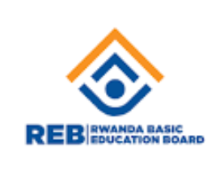

Rwanda Education board

Rwanda Basic Education Board (REB) is a Government institution established in 2020 by the presidential order No: 122/01 of 15/10/2020 published in Official Gazette No 32 bis of 19/10/2020. It was established under the Ministry of Education
to promote the quality of education in basic, specialized and adult schools.
Vision
To promote the quality of education in basic, specialized and adult schools.
Mission
To coordinate and fast track basic education programs and activities aimed at providing to all categories of Rwandans the quality education.
Responsibilities
To prepare and distribute curricula, teaching materials , teacher’s guide, methodologies and establish teaching methods for nursery , primary . secondary, specialized schools and adult literacy schools;
Establish and monitor the ELearning program in basic education;
To promote the use of information and communication technology in basic education;
Coordinate programs and activities to ensure teachers development, build their capacities and monitor their management;
Contribute to the development of education policy;
To coordinate and fast track basic education programs and activities aimed at providing to all categories of Rwandans the quality education;
Advise Government on all activities which may fast track basic education development in Rwanda.
National Examination and School Inspection Authority

National Examination and School Inspection Authority (NESA) is a government institution established in 2020 by the presidential order No N° 123/01 of 15/10/2020 published in Official Gazette N° 32 bis of 19/10/2020. It was established under the Ministry of Education, to be at the center by monitoring the implementation of Norms and Standards through school inspections and also administrate the comprehensive assessments from
level one (1) to level (5) in TSS and Basic Education in line with Competence Based Curriculum / Training
Mastercard foundation
The Mastercard Foundation is a global foundation based in Toronto, Canada. Our programs promote financial inclusion and advance youth learning in Africa. The Foundation was established in 2006 through the generosity of Mastercard when it became a public company. From inception, the Foundation was designed to be a separate entity and independent from Mastercard.
Our policies, operations and funding decisions are made by our President and Board of Directors.